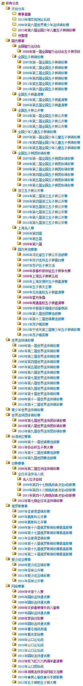

◆◆＝＝》》已添加“2013年第七届全国五子棋锦标赛”分类 欢迎大家向棋谱库中添加棋谱《《＝＝◆◆
首页
五子棋新闻
#1 <font color="red">◆◆＝＝》》已添加“2013年第七届全国五子棋锦标赛”分类 欢迎大家向棋谱库中添加棋谱《《＝＝◆◆</font> 作者：屏蔽 发表时间：2013-7-22 13:29:54
从今天起，任何比赛结束后7天内，我会直接将该分类归类后锁定。
特别的，如果一张棋谱都没有的话，直接删除。
如果有人想要上传过去比赛的棋谱，无论是已有分类或是不存在的分类，请直接联系我。
不存在的分类请提供分类名称，我会负责审核和准备工作。
如无问题，我会新建一个分类并开放7天上传时间。
7天内传不完的，应及时联系我，并申请7天的续期。
希望诸位共同携起手来，建立和维护一个真正有价值的棋谱库系统。
相信所有人都会因此而受益。
［ 鱼岛岛主同学于 2013-7-22 13:57:35 时花20金币送鲜花一朵］
［ 灯塔连珠同学于 2013-8-31 8:47:40 时花20金币送鲜花一朵］
［ 灯塔连珠同学于 2013-8-31 8:47:40 时花20金币送鲜花一朵］
［ 灯塔连珠同学于 2013-8-31 8:47:40 时花20金币送鲜花一朵］
［ 灯塔连珠同学于 2013-8-31 8:47:40 时花20金币送鲜花一朵］
［ 灯塔连珠同学于 2013-8-31 8:47:40 时花20金币送鲜花一朵］
［ 灯塔连珠同学于 2013-8-31 8:49:45 时花20金币送鲜花一朵］
［ 灯塔连珠同学于 2013-8-31 8:49:45 时花20金币送鲜花一朵］
［ 灯塔连珠同学于 2013-8-31 8:49:45 时花20金币送鲜花一朵］
［ 灯塔连珠同学于 2013-8-31 8:49:45 时花20金币送鲜花一朵］
［ 灯塔连珠同学于 2013-8-31 8:49:45 时花20金币送鲜花一朵］
［此帖子已被 屏蔽 在 2013-10-1 6:07:21 编辑过］
#2 Re:近期开始整理棋谱库 作者：梧桐风 发表时间：2013-7-22 14:53:38
发家致富新途径
#3 Re:近期开始整理棋谱库 作者：萧何 发表时间：2013-7-22 17:37:13
弱弱的问一句，新人有钱看棋谱么
#4 Re:近期开始整理棋谱库 作者：屏蔽 发表时间：2013-7-22 19:15:47
弱弱地回答一下 正常情况下任何人都有金币看棋谱 因为每天登陆是有金币发的。
#5 Re:近期开始整理棋谱库 作者：屏蔽 发表时间：2013-7-25 14:43:40
卧槽为毛这个帖子也被转移了！转移人要写记录和原因的啊为毛没这习惯 否则谁知道是咋回事……
#6 Re:近期开始整理棋谱库 作者：屏蔽 发表时间：2013-7-25 14:45:30

#7 Re:棋谱库整理完毕 作者：gerbo 发表时间：2013-8-3 21:08:08
2013炫飞棋社七周年那个好像没有棋谱，请屏蔽老师看看［此帖子已被 gerbo 在 2013-8-3 21:09:37 编辑过］
#8 Re:棋谱库整理完毕 作者：屏蔽 发表时间：2013-8-3 21:18:06
什么叫没有棋谱……
#9 Re:◆◆＝＝》》已设置“2013年第十三届世界连珠锦标赛”棋谱分类 欢迎大家添加棋谱《《＝＝◆◆ 作者：gerbo 发表时间：2013-8-3 23:20:25
2013年≮炫飞☆棋社≯七周年社庆活动暨Q游公开赛 点击这个，会出现什么？ 所以才说没有棋谱。莫非又是我浏览器出问题了。。。
#10 Re:◆◆＝＝》》已设置“2013年第十三届世界连珠锦标赛”棋谱分类 欢迎大家添加棋谱《《＝＝◆◆ 作者：屏蔽 发表时间：2013-8-3 23:51:43
会出现空白 恭喜你答对了……
#11 Re:◆◆＝＝》》欢迎大家添加棋谱《《＝＝◆◆ 作者：小丸.net 发表时间：2013-8-30 15:38:01
难怪又是我的问题。。。NO....这个是CJNT007的问题。。。。
#12 Re:◆◆＝＝》》欢迎大家添加棋谱《《＝＝◆◆ 作者：雨点滴滴 发表时间：2013-8-30 18:40:07
求PB送点金币来。。
#13 Re:◆◆＝＝》》已添加棋谱分类“2013年国际连珠通讯赛” 欢迎大家添加棋谱《《＝＝◆◆ 作者：灯塔连珠 发表时间：2013-8-31 8:49:24
屏蔽管理员非常负责任！支持一下！
#14 Re:◆◆＝＝》》已添加棋谱分类“2013年国际连珠通讯赛” 欢迎大家添加棋谱《《＝＝◆◆ 作者：灯塔连珠 发表时间：2013-8-31 18:53:41
这真是挣金币的好机会呀！！！大家多多贡献棋谱呀~~不过挺辛苦挺枯燥的~